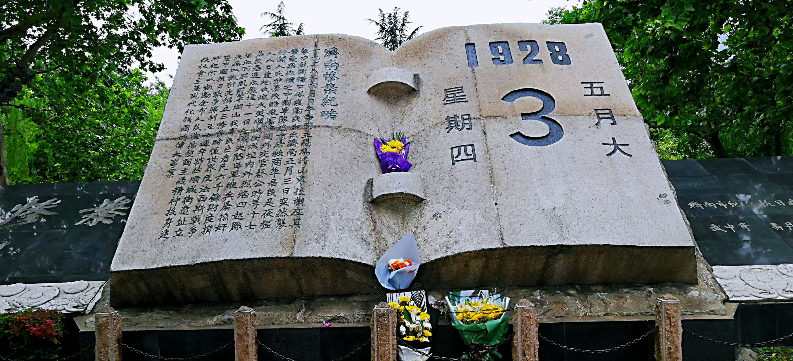
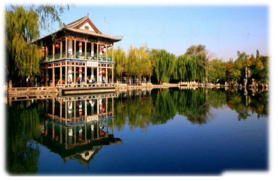

Spring City · Jinan

About Jinan
-
Jinan Overview
Located in the central-western part of Shandong Province, Jinan is the provincial capital and one of China's most important historical and cultural cities. Renowned for its unique spring water culture and magnificent natural scenery, Jinan is a city with a long history and vibrant energy. Let us explore this dynamic city full of charm.
-
Jinan Culture
Jinan boasts a rich cultural heritage, including time-honored traditional villages, hydrological cultural relics, and the civilization represented by the Yellow River culture. In recent years, the Jinan Hydrological Center has leveraged the development of hydrological science education bases, integrating regional characteristics to promote the preservation of hydrological cultural heritage. It strives to establish a new system of Jinan's hydrological culture that embodies affection for hydrology, openness and inclusiveness, continuous improvement, and innovative spirit. At the same time, Jinan places great emphasis on enhancing urban culture by integrating facilities with cultural elements to create new cultural highlights. Additionally, there are many traditional villages and historically significant cultural villages with architectural and historical value. In summary, Jinan's culture is diverse and rich, waiting to be explored and discovered.
-
Jinan History
Jinan has a long history, dating back to 221 BC when Emperor Qin Shi Huang unified the six states and established the Jinan Commandery, with its capital in present-day Zhangqiu District. During the Western Han Dynasty, the name "Jinan" began to appear and gradually played an important role in history. In ancient times, Jinan was the location of the Tan Kingdom, with a history traceable to the early Neolithic Age about 9,000 years ago. The "Longshan Culture," characterized by polished black pottery from 4,000 to 4,500 years ago, was named after its initial discovery in Longshan Town on the eastern outskirts of Jinan in 1928.


Discover Jinan
Introduction

Learn More about Jinan History
-

Jinan May 3rd Massacre
The Jinan Incident, also known as the May 3rd Massacre, occurred in 1928. During the Northern Expedition of the National Revolutionary Army, Japanese militarists, fearing a unified China would hinder their aggression, did everything possible to obstruct the Northern Expedition.
Home > Jinan History
Jinan Overview
Jinan, known as the "City of Springs," is a prefecture-level city, the capital of Shandong Province, a sub-provincial city, a megacity, and a core city of the Jinan Metropolitan Area. It is designated by the State Council as a central city in the southern wing of the Bohai Rim region. With numerous springs, including the "Seventy-Two Famous Springs," Jinan is celebrated for the saying, "Lotus on four sides, willows on three; one city with hills, half filled with lakes." Its eight renowned scenic spots are famous throughout the country, making it a tourist city with a unique blend of "mountains, springs, lakes, rivers, and urban landscape." Jinan is a national historical and cultural city, one of China’s first outstanding tourist cities, and one of the birthplaces of prehistoric culture—the Longshan Culture.
Jinan is an important city in East China, located in the central-western part of Shandong Province. It connects the capital economic circle to the north and the Yangtze River Delta economic circle to the south, serving as a key junction in the Bohai Rim Economic Zone and the Beijing-Shanghai Economic Axis. As a national historical and cultural city, Jinan boasts a long history and profound cultural heritage, being one of the birthplaces of the Longshan Culture.
Jinan possesses unique natural geographical conditions and cultural landscapes. It is renowned as the "City of Springs" due to its abundant springs, including the "Seventy-Two Famous Springs," which are major Attractions. Additionally, Jinan has a long history of cultural traditions, such as ancient architecture and historical sites, attracting numerous visitors.
Jinan is also a modern city with a strong economy, featuring advanced manufacturing, service industries, and cultural industries. At the same time, Jinan is committed to developing emerging industries such as intelligent manufacturing and new energy, promoting urban transformation and upgrading.
In recent years, Jinan has actively advanced urban planning and construction, strengthening urban management and public services to enhance the quality of life. For example, Jinan has improved transportation infrastructure and public transit, alleviating traffic congestion; enhanced urban greening and environmental governance, raising environmental quality; and improved public services such as education and healthcare, elevating the standard of living for its citizens.
Scenic Jinan


-
Baotu Spring
Bamboo Courtyard · Winding Path
-

-
Chaoran Tower
Eternal Lights · Peace and Joy
-

-

-
Red Leaf Valley
Morning and Dusk · Autumn Leaves
-

-
Daming Lake
Charming Scenery · Refreshing
-

Baotu Spring faces Luoyuan Hall to the north, Guolan Pavilion to the west, Laihe Bridge to the east, and is surrounded by a stele corridor to the south. The spring has three outlets, producing clear, sweet water in large volumes, with a maximum yield of 162,000 m³/day. The three outlets stand side by side, with water gushing upward like wheels. The "Leaping Baotu" scene has been listed as one of the Eight Scenic Views of Jinan since ancient times. Numerous small spring eyes in the pool send up strings of bubbles, drifting gracefully like pearls. Since antiquity, Baotu Spring has been a symbol of Jinan. As the saying goes, "Seventy springs flow like milk in Jinan, yet Baotu alone is called the finest spring." It has long been said, "If you haven't visited Baotu Spring, your trip to Jinan is incomplete."
-
Springs give life to Jinan, and water sustains the City of Springs. The Pearl of Springs, Daming Lake, boasts a long history, beautiful landscapes, and rich cultural significance. Its earliest written record appears in the Northern Wei Dynasty’s "Commentary on the Water Classic": "The Luo River flows north to form Daming Lake, with Daming Temple to the west," dating back over 1,500 years. Because of the abundant lotuses in the lake, it was once called "Lianzi Lake"; during the Sui and Tang dynasties, it was also known as "Lishui Bei." In the Song Dynasty, it gained the name "West Lake." Daming Lake underwent several changes and restorations, especially when Zeng Gong, one of the Eight Great Prose Masters of the Tang and Song Dynasties, served as the prefect of Qi Prefecture. He built embankments, bridges, and pavilions around Daming Lake, establishing the foundation for today’s scenic layout. It was turned into a public park in 1955.

-

Five Dragon Pool, also known as Dragon Residence Spring or Huiwan Spring, is located within the Five Dragon Pool Park. The pool is edged with natural rock revetments, measuring 70m in length, 35m in width, and over 6m in depth, making it the deepest spring in Jinan. The pool’s water surface is broad and clear as a mirror. By the pool, there are winding balustrades, painted bridges, pavilions, terraces, weeping willows, verdant pines, bamboo groves, and rugged rockeries. The western and southern banks are built with stone strips, while the eastern and northern banks feature natural rock shores. Weeping willows surround the pool, with a rockery to the north and verdant pines and bamboo groves planted alongside.
-
Jinan Liberation Memorial Hall is located at the former site of the breakthrough point where the People's Liberation Army entered the city during the Jinan Campaign (September 24, 1948). It is a provincial-level cultural relic protection unit and one of the first patriotic education bases in Shandong Province. In March 2014, the management office of the "First Spring in the World" Scenic Area carried out a comprehensive renovation and enhancement. This project focused on the "breakthrough point" as a key element, naming the exhibition for the first time as the "Jinan Campaign Breakthrough Site Exhibition." Both hardware and software of the exhibition hall were comprehensively upgraded.